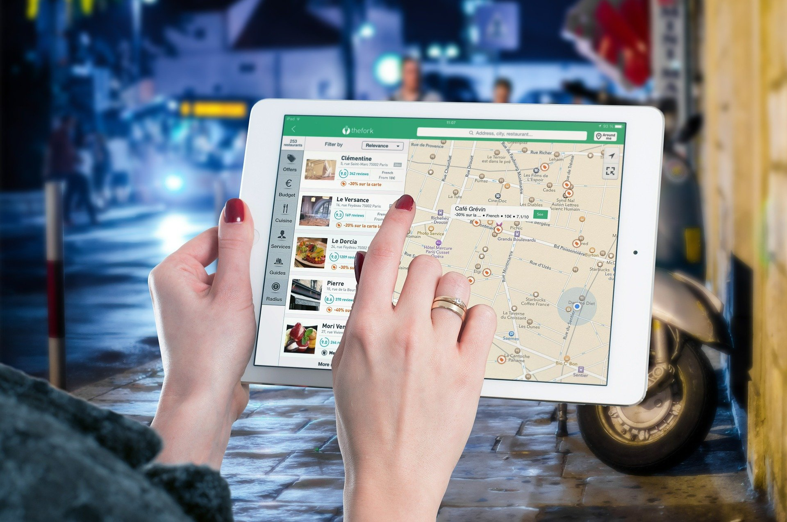

Wie finde ich zum Laden mit den Angeboten?
Für Käufer
Das wichtigste bei der Benutzung von U-Like-It ist natürlich, dass du deinen Standort freigibst. Wenn du das nicht möchtest, wird die Angebotssuche für dich nicht funktionieren.
Wir haben Google Maps in die App integriert. Damit kannst du dich einfach bis zum Laden mit dem Angebot führen lassen. Das ist sehr praktisch, vor Allem, wenn du dich in der Stadt überhaupt nicht auskennst. So kann nichts schiefgehen und du könntest zuerst das Angebot kaufen.
Aber: Sei nett zum Shopbesitzer und schau dir auch noch all die anderen schönen Dinge in diesem Laden an. Vielleicht gefällt dir auch noch etwas anderes?